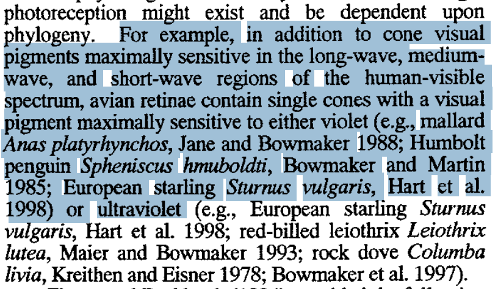

Final Project First Prototype
In this week, I need to do the iterations of my final project ideas
Animal: Penguins
Background
Few weeks ago, I observed penguin in Central Park Zoo and found out that some of the penguins don't enjoy swimming. During the observation, I keep tracking particular one penguin and it did not have swimming behavior within one hour. And surprisingly, no porpoising behavior were observed.
Penguins are seabirds that naturally spend a vast amount of their life in the ocean swimming and foraging for food. Swimming behavior, according to the research, is a foraging behavior for penguin in the wild, while porpoising might be a behavior of hiding predator in the wild. However, swimming and porpoising may be a behavior for enjoyment in the aquarium. Hence, in my opinion, penguins in the zoo should experience these two behaviors.

Concept
I want to encourage penguins go into the water swimming and hopefully porposing while they interact with my enrichment device. My enrichment device is an ultraviolet-LED ball hanging above the water.
Penguin Vision and Curiosity
Based on the paper, A penguin's eyes are adapted to see clearly both in air and under water and have binocular vision. They contain single cones with a visual pigment maximally sensitive to either violet or ultraviolet. Thereofre, Penguins have color vision and are sensitive to violet, blue, and green wavelengths of light and possibly to ultraviolet light as well.

Environment
Materials
White Plastic + Glass + UV LED insides
d:20 inch